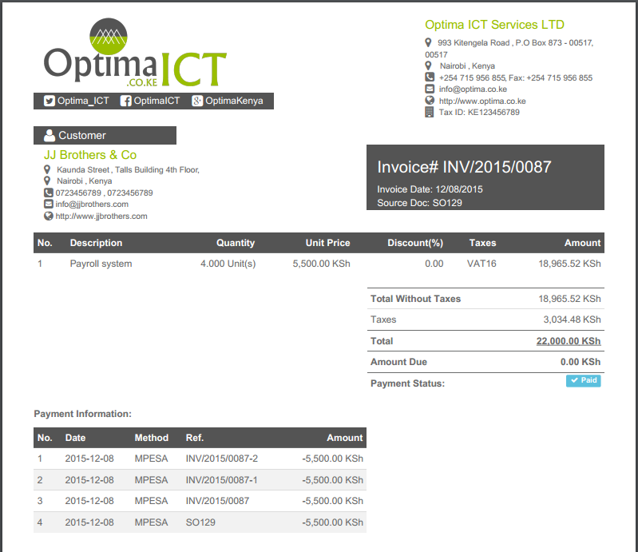

There are five different report templates to choose from per report
Company Form: Default Report Settings for all reports

You can customize the 'DEFAULT' theme colors, font-family, font-size, and logo for each type of your report by changing the report settings found in the company profile. You can also customize colors, font-family, font-size and logo for specific report by changing the report settings in the respective report form. For example, if you want to customize colors, font, font-size and logo for a specific invoice for a certain customer, you can do so in the invoice form.This will override the default report settings configured in the company profile form
Invoice Form: Report Settings for particular report e.g Invoice
We are a highly qualified team of well-rounded software engineers and applications systems integrators specialised in open source ERP solutions for SMEs all over the world